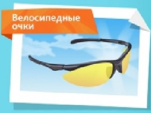

ЛУЧШЕ НЕТ ВЕЛОСИПЕДА!
Необходимо приобрести шлем, он защищает голову от самых опасных травм. |
|
Перчатки без пальцев защищают руки во время езды и при падении. |
|
Велосипед должен быть заметен в любое время суток и при любой погоде, чтобы водители автомобилей были осторожнее и не сбили велосипедиста. |
|

|
Приобрети велосипедные очки чтобы защитить глаза от солнца, ветра, пыли и грязи. |
Установи звонок для предупреждения пешеходов. Звони всегда, когда видишь поблизости людей, ведь велосипед движется бесшумно. |
Источник и подробная информация о действиях на сайте:
http://www.culture.mchs.gov.ru
ТЕЛЕФОН СЛУЖБЫ СПАСЕНИЯ: 112